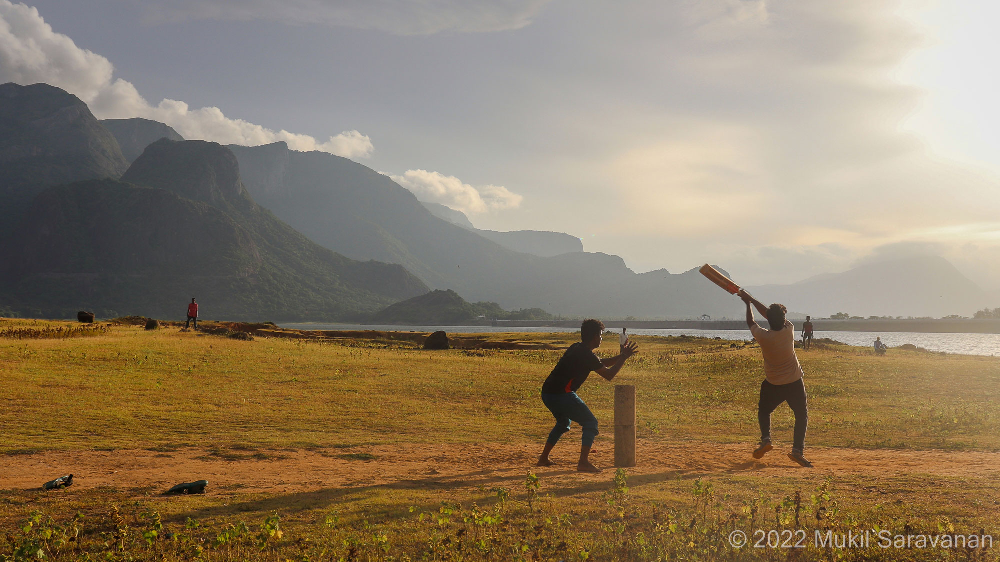
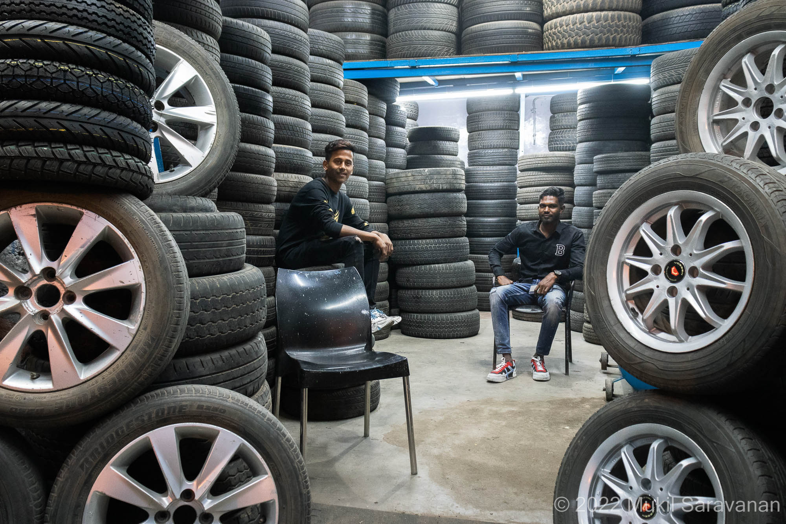

Ever since my childhood, I have had a love for taking pictures. It all started with a young kid
(yeah, it’s me :)) with a low-resolution point-and-shoot camera, dreaming of shooting whatever he
found interesting. Over time, I tried out numerous techniques and compositions, and my passion for
photography grew stronger. During my college years, a friend and I explored and documented
historical temples and artefacts around my hometown. On May 7, 2019, I purchased a Canon 77D, which
I have been using ever since. Gradually, I strengthen my knowledge of composition and learnt
different camera techniques. I, personally feel photography helps me develop a keen eye to notice
beauty in the world around me and sculpt every single component to portray the story.
Here is a short story describing my thought process and experience while capturing the glorious
Milky Way.
Shooting the milky way in the night sky has always been a dream for me. The first time (01:30, April
18 2020), when I planned to shoot, I couldn't even see where it was. After many "there here" debates
with my mom for half an hour, I was finally convinced that the milky way was actually between the
two constellations. As there was some light pollution in my area, I couldn't capture it as I wished.
So, I started shooting timelapse so that, I understand its position better. I again tried shooting
after a couple of days but I couldn't get a satisfying image. In May, I tried shooting in a
different location away from lights. Yeah, the results were better than my previous attempts but the
clouds covered the milky way most of the time. In the meantime, I learnt new tricks to shoot the
milky way in light-polluted areas. Yeah, that was really helpful. Having some experience and enough
knowledge this time, I was able to locate it easily. I told my dad to stop the bike because the
environment was pretty dark there. I set up my tripod, clicked the shutter button and Boom! The
first picture stunned me. After that, I played with different positions and came up with those
images. Overall, capturing the Milky Way was a challenging yet rewarding experience. I'm really
proud and happy to share these pictures and the story behind them.
PHOTOGRAPHY
 - (Hightlights_whites)-1252.jpg)

.jpg)


{kind=link}
![ Cricketer's Eutopia Aliyar Dam This was shot at zero point view in Aliyar dam during the golden hour. It was a beautiful sunny day in the late summer in Aliyar (around 20 km from Pollachi). While amazed by the beautiful scenery, people playing cricket caught my attention. After getting lost there, I took a deep breath, before composing the image. What a magical experience it would be to play cricket with your pals while surrounded by stunning mountains. I really adore the part the most. June 19, 2022](../../assets/beyond-tech/photography/IMG_6643-02.jpg){kind=link}
{kind=link}
{kind=link}
{kind=link}
{kind=link}
{kind=link}
{kind=link}
{kind=link}
{kind=link}
{kind=link}
{kind=link}
{kind=link}
{kind=link}
{kind=link}
{kind=link}
{kind=link}
{kind=link}
![ Street Portraits Kalasipalayam This was shot in the streets of Kalasipalayam, Bangalore. The photography walk with Subham Farate started from Majestic Metro Station and down the avenues towards VisveswaraPuram (the paradise for street food lovers in Bangalore). The two young men were taking in the sight on a nice late evening. When the lads saw me taking pictures, they became excited. I love how it's composed to have tyres on both sides leading to the subjects on either side of the grids. November 27, 2022](../../assets/beyond-tech/photography/IMG_9727_cool_tone-01.jpg){kind=link}
{kind=link}
{kind=link}
{kind=link}
{kind=link}
BEATBOXING
I am the kind of person who listens to (and also speaks) music. Beatboxing is a unique musical art form that uses the vocal tract to mimic percussion, sound effects and a lot more. I first fell in love with beatboxing in high school, amazed by the variety of sounds that could be produced with the human mouth. During college, I continued to perfect my skills and experiment with different techniques and sounds. As I continued to practise beatboxing, it has gradually become an integral part of how I express my feelings in new and exciting ways through music.
Here are a few clips of a Beatbox competition (2021) and a short interview.
click on the image
CALISTHENICS
Through my journey, I strongly believe that working out helps me develop the mental fortitude more than it does to my physical strength. It enormously callused my mind to be self-disciplined and push my boundaries day in and day out, despite the hardships.
I follow a workout routine of Push, Pull, Leg & Abs and HITT cyclically for 6 days, followed by a rest day on a week.
Here is my workout tracker graph, depicting the percentage of days I adhered to my above routine for the past 3 year
Note: April 2021 is not a calculation error.